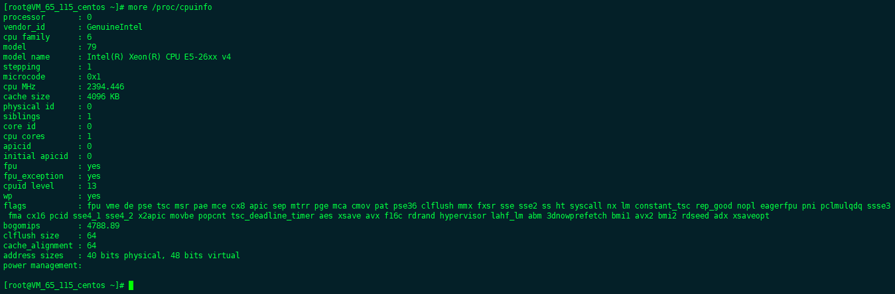
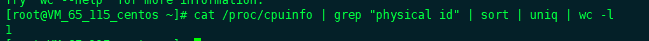
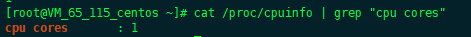
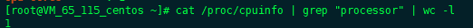
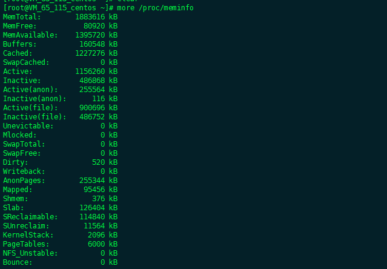
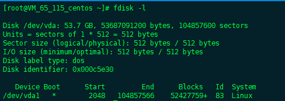
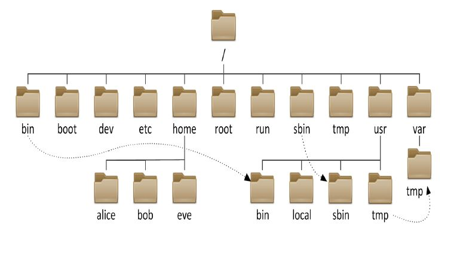

Linux系统基本结构
2.1 Linux控制台的使用
2.2系统和硬件
Linux系统查看系统的硬件信息没有Windows那么直观，但是通过命令可以把硬件信息显示的更加清楚。我以我的腾讯云服务器来做示例
- 1 查看系统PCI设备
Ispci命令列出所有的POI设备，你如主板，声卡，显卡和网卡灯，也会把USB接口设备列出来。
# Ispci
输出结果如下
下面我们分析一下这个机器有什们类型的参数 Host bridge：显示的是继承主板设备为Intel Corporation 440FX - 82441FX PMC</br> VGE：显示的是VGE显卡设备为Cirrus Logic GD 5446 有一个USB接口设备 - 2 查看CPU信息
# more /proc/cpuinfo
输出结果

其中，processor是逻辑处理器的唯一标识符，vendor-id表示处理器类型，如果为英特尔处理器，则字符串是GenuineIntel,physical id表示每一个物理封装的唯一标识符，也就是一个物理CPU,sibling表示位于相同物理封装中的逻辑处理器的数量，core id表示每个内核的唯一标识符，cpu cores表示位于相同物理封装中的内核数量。
在siblings和cpu cores值之间有个对应关系，如果sibling是cpu cores的两倍，则说明系统支持超线程，并且超线程已打开，如果sibling和cpu cores一致，则说明系统不支持超线程，或者超线程未打开。
要查看系统物理CPU的个数，同通过如下命令查看。 
要查看每个物理CPU中内核的个数，可通过如下命令查看 
要查看系统所有逻辑CPU个数(所有每个物理CPU中内核的个数加上超线程个数)，可通过如下命令查看。

根据上面输出可知，此系统有1个物理cpu，每个物理CPU中有1个内核，并且没有超线程。 - 3 查看系统内存信息

根据这个命令，可以很清楚的知道系统的内存占用情况 - 4 查看磁盘分区信息

2.3文件系统结构介绍
2.3.1 目录结构
- 1 经典树形目录

整个Linux系统以文件的形式全部存放在根目录下，同时将所有文件分类，分级分层组织在一起，形成了一个梳妆目录结构。 - 2 目录功能介绍
/：根目录，位于Linux文件系统目录结构的顶层，一般根目录下只存放目录，不要存放文件，/etc、/bin、/dev、/lib、/sbin应该和根目录放置在一个分区中。
/bin，/usr/bin：该目录为命令文件目录，也称为二进制目录。包含了供系统管理员及普通用户使用的重要的linux命令和二进制（可执行）文件，包含shell解释器等。
/boot： 该目录中存放系统的内核文件和引导装载程序文件，/boot/vmlinuz为linux的内核文件，以及/boot/gurb。建议单独分区，分区大小100M即可。
/dev： 设备（device）文件目录，存放linux系统下的设备文件，访问该目录下某个文件，相当于访问某个设备，存放连接到计算机上的设备（终端、磁盘驱动器、光驱及网卡等）的对应文件，包括字符设备和块设备等，常用的是挂载光驱mount /dev/cdrom/mnt。
/etc： 系统配置文件存放的目录，该目录存放系统的大部分配置文件和子目录，不建议在此目录下存放可执行文件，重要的配置文件有/etc/inittab、/etc/fstab、/etc/init.d、/etc/X11（X Window系统有关）、/etc/sysconfig（与网络有关）、/etc/xinetd.d修改配置文件之前记得备份。该目录下的文件由系统管理员来使用，普通用户对大部分文件有只读权限。
/home： 系统默认的用户宿主目录，新增用户账号时，用户的宿主目录都存放在此目录下，~表示当前用户的宿主目录，~test表示用户test的宿主目录。建议单独分区，并设置较大的磁盘空间，方便用户存放数据。
/lib，/usr/lib，/usr/local/lib：系统使用的函数库的目录，程序在执行过程中，需要调用一些额外的参数时需要函数库的协助，该目录下存放了各种编程语言库。典型的linux系统包含了C、C++和FORTRAN语言的库文件。/lib目录下的库映像文件可以用来启动系统并执行一些命令，目录/lib/modules包含了可加载的内核模块，/lib目录存放了所有重要的库文件，其他的库文件则大部分存放在/usr/lib目录下。
/lost+fount： 在EXT2或EXT3文件系统中，当系统意外崩溃或机器意外关机，产生的一些文件碎片放在这里。在系统启动的过程中fsck工具会检查这里，并修复已经损坏的文件系统。有时系统发生问题，有很多的文件被移到这个目录中，可能会用手工的方法来修复，或者移动文件到运来的位置上
/mnt，/media： mnt目录主要用来临时挂载文件系统，为某些设备提供默认挂载点，如floppy，cdrom。这样当挂载了一个设备如光驱时，就可以通过访问目录/mnt/cdrom下的文件来访问相应的光驱上的文件了。
/opt： 给主机额外安装软件所摆放的目录。如：FC4使用的Fedora 社群开发软件，如果想要自行安装新的KDE 桌面软件，可以将该软件安装在该目录下。以前的 Linux 系统中，习惯放置在 /usr/local 目录下。
/proc： 此目录的数据都在内存中，如系统核心，外部设备，网络状态，由于数据都存放于内存中，所以不占用磁盘空间，比较重要的目录有/proc/cpuinfo、/proc/interrupts、/proc/dma、/proc/ioports、/proc/net/*等。
/root：系统管理员root的宿主目录，系统第一个启动的分区为/，所以最好将/root和/放置在一个分区下。
/sbin，/usr/sbin，/usr/local/sbin：放置系统管理员使用的可执行命令，如fdisk、shutdown、mount等。与/bin不同的是，这几个目录是给系统管理员root使用的命令，一般用户只能"查看"而不能设置和使用。
/tmp： 一般用户或正在执行的程序临时存放文件的目录,任何人都可以访问,重要数据不可放置在此目录下。
/srv： 服务启动之后需要访问的数据目录，如www服务需要访问的网页数据存放在/srv/www内。
/usr： 应用程序存放目录，/usr/bin 存放应用程序， /usr/share 存放共享数据，/usr/lib 存放不能直接运行的，却是许多程序运行所必需的一些函数库文件，/usr/local 存放软件升级包，/usr/share/doc 系统说明文件存放目录。
/usr/share/man: 程序说明文件存放目录，使用 man ls时会查询/usr/share/man/man1/ls.1.gz的内容建议单独分区，设置较大的磁盘空间。
/var： 放置系统执行过程中经常变化的文件，如随时更改的日志文件 /var/log。/var/log/message： 所有的登录文件存放目录。/var/spool/mail： 邮件存放的目录。 /var/run: 程序或服务启动后。建议单独分区，设置较大的磁盘空间。
/tmp：存放临时文件目录，一些命令和应用程序会用的到这个目录。该目录下的所有文件会被定时删除，以避免临时文件占满整个磁盘。
2.3.2 系统核心组成
1.内存管理
内存管理能够有效的管理系统的内存，响应程序对内存的请求，Linux内存管理还支持虚拟内存，就是Linux在运行程序和一些数据可以超过实际的物理内存，超过物理内存的这一部分内存是通过对磁盘申请得到的，一般情况下系统把当前运行的程序保留在内存里边，到了内存紧缺，迫不得已的时候就会去跟磁盘交换程序块。
2.进程管理
Linux使用基于优先级的进程调度算法来控制进程对CPU的访问，当某个进程需要被执行的时候，那么进程调度器就会基于调度算法启动新的程序，Linux支持多任务运行，比如你在Linux上可以“同时”运行多个程序。这样看起来好像Linux可以同时并发的执行多个任务，其实不然，而是在系统运行的时候，每个进程会得到被cpu执行的时间片，当某一个进程的时间片执行完后，调度进程就会去执行另一个进程，这样对每个进程都进行的快速切换执行，这样的快速快到让我们感觉好像cpu在同一时间执行多个程序一样。
3.进程间通信
在不同的进程之间控制数据的交换和共享，由于不同的进程之间的进程空间不同，所以进程间通信会借助内核的中转来实现进程。
4.虚拟文件系统
Linux虚拟文件系统隐藏了各种硬件的具体细节，为所有的设备提供了统一的接口，使得Linux可以支持多种文件类型，虚拟文件分为逻辑文件和设备驱动文件，逻辑文件指的是Linux支持的文件系统， 设备文件指的是为每一种硬件控制器所编写的设备驱动程序模块。
5.网络接口
网络接口提供了对各种网络标准的存取实现和各种网络硬件的支持。网络接口可分为网络协议和网络驱动程序。网络协议部分负责实现每一种可能的网络传输协议。网络设备驱动程序则负责与硬件设备通信，每一种可能的硬件设备都有相应的设备驱动程序。
2.2系统和硬件
- 系统关机重启命令如下
# shutdown -r now - 系统关机命令如下
# shutdown -h now - 通过systenctl启动服务
sytemctl start [服务名] - 通过systenctl停止服务
sytemctl stop [服务名] - 通过systenctl重启服务
sytemctl stop [服务名]